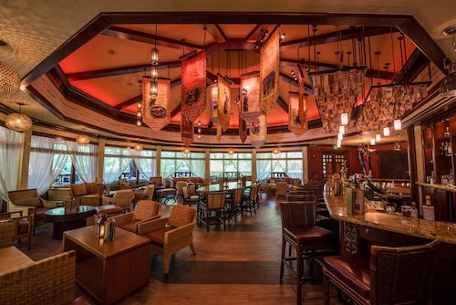
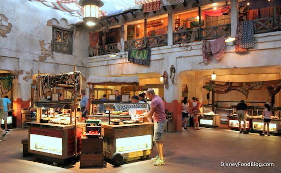
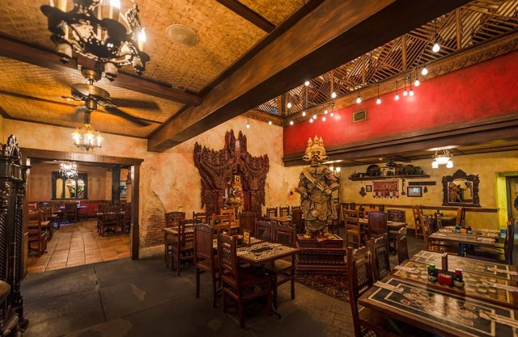

I migliori ristoranti Table Service di Animal Kingdom
By Valentina
7 Febbraio 2021
Eccoci di nuovo a parlare di….cibo! Dopo aver esplorato i migliori ristoranti Table Service di Magic Kingdom, Epcote Hollywood Studios, oggi diamo un’occhiata ad Animal Kingdom.
A differenza di quello che abbiamo detto per gli Hollywood Studios, Animal Kingdom è casa di molti eccezionali ristoranti. Tenendo in considerazione le aree del parco: Asia, Africa ecc...questo potrebbe già suggerirvi che l’offerta di cibo in questo parco è piuttosto particolare.
Ecco la mia Top 3 dei Ristoranti (più uno!) ad Animal Kingdom! Disclaimer: tutti questi ristoranti sono nella mia to-do list per la prossima vacanza, quindi non provati personalmente, ma questa lista è frutto di una ricerca su diversi siti e forum americani - e i miei gusti personali.
3. Tiffins

Immagine di disneytouristblog.com
Tiffins è il ristorante Table Service più nuovo di Animal Kingdom, aperto solo nel 2016 e si trova a Discovery Island. È considerato Signature Dining - ovvero è uno di quei ristoranti considerati ancora meglio (e più caro…) degli altri ristoranti tradizionali.
Questo ristorante serve pranzo e cena e offre una cucina ispirata all’Asia, Africa e Sud America. E’ diviso in 3 sale, tutte molto curate e arredate con arte raccolta in vari paesi durante la fase di ricerca per la costruzione di Animal Kingdom. È possibile visitare tutte e tre le sale ed ammirare questi artefatti che sono sicuramente parte della storia del parco.
Per quanto riguarda il cibo, dimenticatevi di hamburger e patatine: sul menù troverete polpo scottato, pesce spada grigliato, cervo speziato e molto altro. Per i bambini viene invece proposto un menù più tradizionale, con pasta e pollo. Anche i dolci sono un po’ più tradizionali del resto del menù. Vi lascio qui il link con tutto il menù.
Perché mi piace? Ristorante sofisticato, con un sacco di piatti unici, dentro un parco divertimenti? Sicuramente qualcosa da provare (se il portafoglio lo permette!). Prezzi a persona tra i $50 e $80.
2. Tusker House

Immagine di disneyfoodblog.com
Situato nell’area Africana, questo ristorante riproduce un mercato africano ed offre un sacco di cibi ispirati a questo continente, in stile buffet con personaggi Disney che ti verranno a salutare durante il tuo pasto.
Questo ristorante ha quattro sale da pranzo, tutte decorate in stile africano e l’area buffet sembra un mercato all’aperto. Troverete qualche piatto esotico, come il pollo al curry, verdure miste africane e salmone marinato piccante, ma anche una selezione di cibi più tradizionali (waffle per colazione, torta di fragole ecc..). Il menù completo è qui.
Come detto, si potrà incontrare Paperino e compagni, vestiti con le loro uniformi da safari. I prezzi per questo ristorante vanno dai $42 per colazione, ai $55 per pranzo e cena (escluse le mance).
Perché mi piace? Perché il buffet più accontentare sia persone che vogliono provare cibi più particolari, e persone più...conservative. La possibilità di incontrare i personaggi Disney poi é sicuramente un’esperienza divertente (e vi fa risparmiare il tempo dei meet and greet!).
PS: Questo ristorante non ha ancora riaperto a causa della pandemia, ma tornerà presto!
Yak & Yeti

Immagine di disneyfoodblog.com
Questo è il ristorante che sicuramente proverò la possima volta che sono ad Animal Kingdom. Si trova proprio alla base dell’attrazione più famosa del parco (Pandora a parte!): Expedition Everest. Il ristorante, aperto per pranzo e cena offre cibo di ispirazione asiatica, in piccoli piatti da condividere. Si troveranno verdure cotte nel wok, zuppe, insalate, pasta (chiaramente asiatica!) e molto altro. Il menù per i bambini è molto vasto, e sul menù troverete un sacco di cibo per vegetariani. Il prezzo è sul $30-$50 - dipende da quante portate vorrete provare! Il menù completo è qui.
PS: Yak and Yeti ha anche una location counter service (self-service) di cui parlerò in un futuro articolo sui migliori quick service nei parchi!
Perché mi piace? Amo la cucina asiatica - e questo ristorante ha un’atmosfera molto rilassata, oltre ad essere relativamente economico, rispetto agli altri della lista.
_ _ _
Se quest’articolo è stato interessante, non dimenticarti di seguirci sul podcast “Aperitivo a Main Street, U.S.A.”, disponibile su Spotify, Anchor e tutte le altre maggiori piattaforme audio!